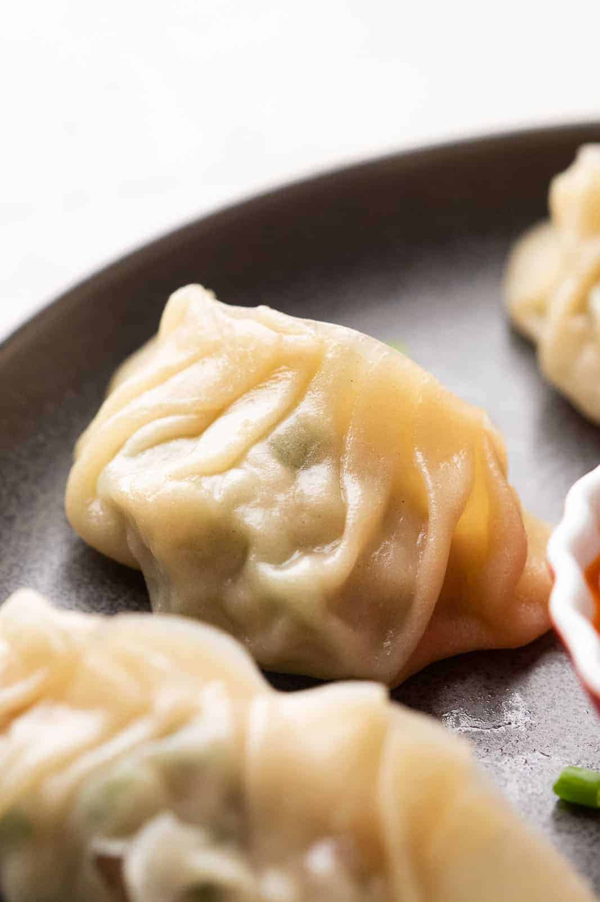
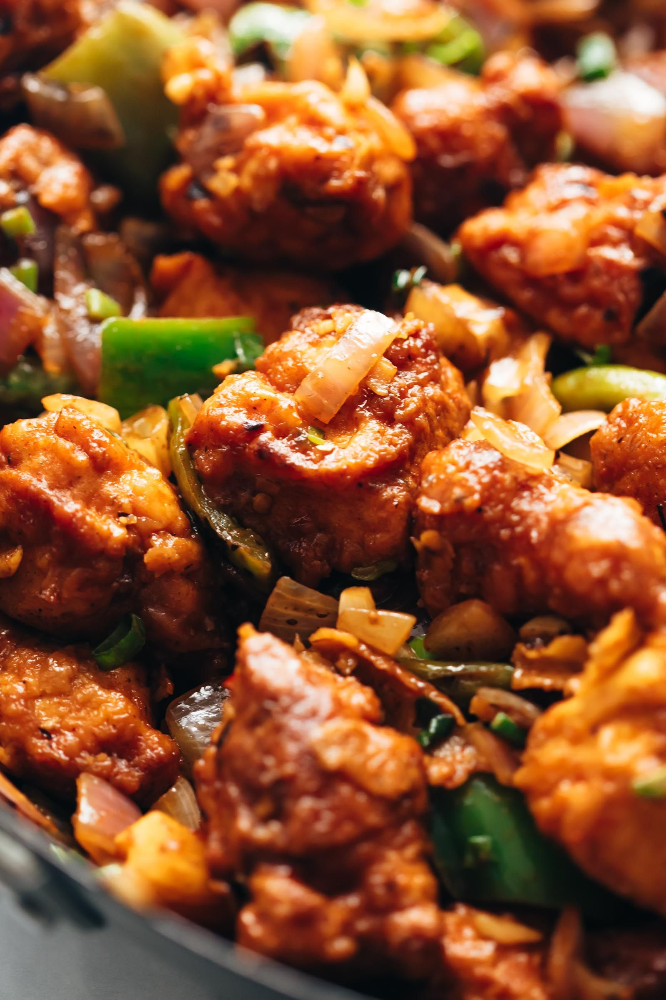

Chicken MoMo
Ingredients
- 450 gm all purpose flour
- 1 tablespoon refined oil
- 2 large onion
- 1 inch ginger
- water as required
- 1 tablespoon chilli garlic paste
- 300 gm boiled chicken
- 5 green chilli
- salt as required
- 2 teaspoon soy sauce
- black pepper as required
- 1/2 cup red bell pepper
Process:-
- Step 1 Chop the vegetables and wash chicken Chicken Momos is a dish that needs no introduction. However, it is pretty easy to prepare it at home without putting in much effort. Here's how you go about preparing it at home: To begin with, rinse the veggies and chicken with lukewarm water to thoroughly clean them. Then take a clean chopping board, chop the vegetables separately and keep them aside.
- Step 2 Boil the chicken and then shred well Then take a pan or a pressure cooker and boil the chicken, with a pinch of salt and pepper. If you want to make it aromatic, you can add a small teaspoon of ginger and chilli garlic paste. If you like the flavour of garlic, you can add some more garlic paste. Once done, carefully mince the boiled chicken. Keep it aside.
- Step 3 Prepare the dough and filling for Chicken Momos Now, take a deep mixing bowl and add refined oil in it followed by all-purpose flour and salt. Mix well with enough water and knead the mixture into a smooth dough. Knead well and ensure that no lumps are formed. Take another mixing bowl and add chicken followed by chopped vegetables, mix well and combine everything together. Then, add soy sauce to the chicken mix and stir well. Now take the prepared dough and roll out small balls out of it.
- Step 4 Flatten the dough balls and fill it with chicken stuffing, and steam for 20 minutes Using a rolling pin, flatten the balls in a square shape and add the chicken and veggies stuffing at the centre. Bring the edges close and secure them to make a momo. Repeat this step with the remaining balls. Transfer the prepared momos to a steamer and steam for 20 minutes or until they turn soft and tender. Serve fresh and hot with your choice of chutney or dip.

Chili Chicken
Ingredients
- 500 gm chopped chicken
- 1/2 cup corn flour
- 1/2 teaspoon garlic paste
- 2 tablespoon sliced green chilli
- 2 tablespoon vinegar
- salt as required
- 1 beaten egg
- 1/2 teaspoon ginger paste
- 2 cup chopped onion
- 1 tablespoon soy sauce
- 1/2 cup sunflower oil
- 1/2 cup sliced capsicum (green pepper)
Process:-
- Step 1 Wash the chicken and prepare the marinade To make this delicious recipe, begin with washing the chicken in some lukewarm water and rinse it again in cold water. Then take a large bowl and combine chicken, eggs, ginger-garlic paste and cornflour in it. Mix all the ingredients properly. You can also drizzle a little water to the batter to coat the chicken pieces evenly. Once done, refrigerate the chicken for 1-2 hours.
- Step 2 Prepare the chilli chicken masala After 1-2 hours, take out the marinade. Next, heat oil in a deep pan over a high flame. Carefully place the chicken pieces in the oil until cooked through. Remove and drain excess oil on absorbent paper. Meanwhile, heat 1 or 2 tbsps of oil in a separate pan over medium flame. Once the oil is sufficiently hot, add the onions and fry for 2-3 minutes till they turn translucent. Then add the capsicum and green chillies and mix well again. You can also add some dry roasted green chillies to accentuate the taste. Moreover, If you prefer the dish extra spicy, you can also add some vinegar-soaked green chillies to this recipe, as it adds to the taste and flavour. (optional)
- Step 3 Cook chicken in soy sauce & vinegar When the veggies are partially cooked, add soy sauce, vinegar, chicken and salt. Mix all the ingredients well and make sure that the chicken is well coated in the sauces. Keep stirring so that the chicken does not stick to the pan.
- Step 4 Toss the Chilli Chicken and serve hot Once done, remove and transfer the dish to a bowl. Garnish with the spring onions and roasted sesame seeds (optional) and serve it to your family and friends. We are sure your loved ones will love this awesome recipe. Do try it, rate it and leave a comment in the section below.
